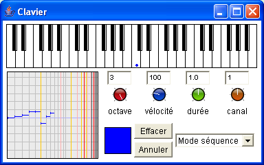
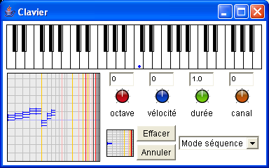

Le clavier permet de construire des séquences ou mixage d'objets musicaux. Lorsqu'une couleur est glissée dans la case centrale (ce qui est le cas quand un nouveau clavier est ouvert), le clavier peut être utilisé pour construire des séquences ou accord de notes, chaque touche correspondra à une hauteur différente.
N'importe quel objet musical peut être glissé dans la case centrale est devenir ainsi le matériau associé à chaque touche. Dans l'exemple suivant, un accord majeur a été glissé dans la case centrale, chaque touche va déclencher un accord transposé en fonction de la hauteur de la touche sur le clavier.

Le menu déroulant de droite permet de choisir le mode séquence ou accord. Les valeurs de l'octave courante, de vélocité, de durée et de canal MIDI peuvent être modifiées : le réglage se fait par un mouvement vertical de la souris sur les boutons rotatifs, et peut être affiné par un appui sur Ctrl. Le résultat est disponible dans la case de gauche.